જો આ પ્રશ્નમાં ભૂલ થઈ હોય, તો ફરી જુઓ: સંદર્ભ fs-id1239606.
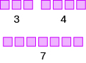
ગુલાબી ચોરસથી 3 + 4 = 7નો સરવાળો દર્શાવેલો છે: ત્રણ ચોરસમાં ચાર ચોરસ ઉમેરવાથી સાત ચોરસ થાય છે.
જો આ પ્રશ્નમાં ભૂલ થઈ હોય, તો ફરી જુઓ: સંદર્ભ fs-id1988116.
બાદબાકીની લખાવટનો ઉપયોગ કરો
બાદબાકીની લખાવટ
| ક્રિયા | લખાવટ | પદાવલી | આ રીતે વાંચો | પરિણામ |
|---|---|---|---|---|
| બાદબાકી | સાત ઓછા ત્રણ | આ સંખ્યાઓનો તફાવત: અને |
ઉકેલ
- ⓐ આને આપણે આઠ ઓછા એક વાંચીએ છીએ. પરિણામ છે આઠ અને એકનો તફાવત.
- ⓑ આને આપણે છવ્વીસ ઓછા ચૌદ વાંચીએ છીએ. પરિણામ છે છવ્વીસ અને ચૌદનો તફાવત.
- ⓐ
- ⓑ
- ⓐ બાર ઓછા ચાર; બાર અને ચારનો તફાવત
- ⓑ ઓગણત્રીસ ઓછા અગિયાર; ઓગણત્રીસ અને અગિયારનો તફાવત
- ⓐ
- ⓑ
- ⓐ અગિયાર ઓછા બે; અગિયાર અને બેનો તફાવત
- ⓑ ઓગણત્રીસ ઓછા બાર; ઓગણત્રીસ અને બારનો તફાવત
પૂર્ણ સંખ્યાઓની બાદબાકી નમૂના દ્વારા દર્શાવો
| પહેલી સંખ્યા 7નો નમૂનો બનાવીને શરૂઆત કરીએ. | ચિત્રમાં કિનારીવાળા સાત રાખોડી ચોરસ છે અને તેમની નીચે સંખ્યા 7 લખેલી છે. |
| હવે બીજી સંખ્યા 3 દૂર કરો. આ 3 ખંડ દૂર કરવાના છે તે દર્શાવવા તેમની આસપાસ વર્તુળ દોરીશું. | ચિત્રમાં કિનારીવાળા ત્રણ રાખોડી ચોરસ લાલ વર્તુળમાં છે; પછી થોડી જગ્યા અને પછી કિનારીવાળા બીજા ચાર રાખોડી ચોરસ છે, જે વર્તુળમાં નથી. |
| બાકી રહેલા ખંડોની સંખ્યા ગણો. | સફેદ પૃષ્ઠભૂમિ પર ઘેરી કિનારી અને આછા પડછાયાવાળા ચાર આછા રાખોડી ચોરસ આડી હરોળમાં છે. |
| એકમના 4 ખંડ બાકી છે. | આપણે આ દર્શાવ્યું છે: . |
ઉકેલ
| એટલે 8 અને 2નો તફાવત. | |
| પહેલી સંખ્યા 8નો નમૂનો બનાવો. | ઘેરી કિનારીવાળા આછા વાદળી રંગના આઠ ચોરસની હરોળ છે. સફેદ પૃષ્ઠભૂમિ પર તેમની વચ્ચે નીચે સંખ્યા “8” લખેલી છે. |
| બીજી સંખ્યા 2 દૂર કરો. | ઘેરી કિનારીવાળા આછા વાદળી રંગના આઠ ચોરસની હરોળ છે. પહેલા બે ચોરસ લાલ વર્તુળમાં છે. |
| બાકી રહેલા ખંડોની સંખ્યા ગણો. | ઘેરી કિનારીવાળા આછા વાદળી રંગના છ ચોરસની હરોળ. |
| એકમના 6 ખંડ બાકી છે. | આપણે આ દર્શાવ્યું છે: . |
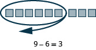
ચિત્રમાં ખંડોથી 9 – 6ની બાદબાકી દર્શાવેલી છે.
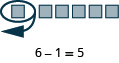
છ ખંડમાંથી એક ખંડને વર્તુળમાં દર્શાવી દૂર કરેલો છે. પાંચ ખંડ બાકી છે. નીચે 6 − 1 = 5 લખેલું છે.
ઉકેલ
| પહેલી સંખ્યા 13નો નમૂનો બનાવો. આપણે 1 દશક અને 3 એકમ વાપરીએ છીએ. | આછા વાદળી રંગના દસ ખંડ આડી હરોળમાં છે, પછી થોડી જગ્યા અને પછી બીજા ત્રણ ખંડ છે. આ સાદું ચિત્ર જથ્થા, માહિતીના ભાગ કે ક્રમશઃ પ્રક્રિયા દર્શાવતું હોઈ શકે છે. |
| બીજી સંખ્યા 8 દૂર કરો. પણ આપણી પાસે 8 એકમ નથી, તેથી 1 દશકના બદલામાં 10 એકમ લઈશું. | 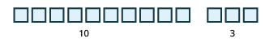 સફેદ પૃષ્ઠભૂમિ પર ઘેરી કિનારીવાળા આછા વાદળી ચોરસનાં બે જૂથ છે. એક જૂથમાં 10 ચોરસ અને બીજામાં 3 ચોરસ છે. તેમની નીચે અનુક્રમે 10 અને 3 લખેલું છે. |
| હવે આપણે 8 એકમ દૂર કરી શકીએ છીએ. | 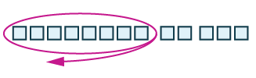 તેર છૂટા એકમના ખંડમાંથી પહેલા આઠને જાંબલી વર્તુળમાં દર્શાવ્યા છે. નીચેનું ડાબે બતાવતું તીર આઠ ખંડ દૂર કરવાનું સૂચવે છે. વર્તુળની બહાર બે અને ત્રણનાં જૂથમાં પાંચ ખંડ બાકી છે. |
| બાકી રહેલા ખંડો ગણો. | ઘેરી કિનારીવાળા પાંચ આછા વાદળી ચોરસની હરોળ. પહેલા બે ચોરસ અને બાકીના ત્રણ ચોરસ વચ્ચે થોડી જગ્યા છે. |
| પાંચ એકમ બાકી છે. | આપણે આ દર્શાવ્યું છે: . |
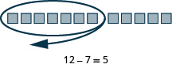
ચિત્રમાં ખંડો વડે 12 – 7ની બાદબાકીનું સમીકરણ દર્શાવેલું છે.
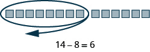
ચિત્રમાં ખંડો વડે 14 – 8ની બાદબાકીનું સમીકરણ દર્શાવેલું છે.
ઉકેલ
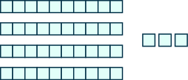
ચિત્રમાં બે પ્રકારના ભાગ છે. પહેલા ભાગમાં 4 આડી સળીઓ છે; દરેકમાં 10 ખંડ છે. બીજા ભાગમાં 3 છૂટા ખંડ છે.
4 દશક અને 3 એકમ = 43.
3 દશક અને 13 એકમ = 43.
આકૃતિમાં બે જૂથ છે. ડાબા પહેલા જૂથમાં 3 વાદળી હરોળમાં આધાર-10ના ખંડો અને 1 લાલ હરોળમાં 10 ખંડ છે. તેની લખાવટ 4 દશક છે. દસ ખંડની પહેલી હરોળની બાજુમાં 3 છૂટા ખંડ છે. તેની લખાવટ 3 એકમ છે. તીર જમણે બીજા જૂથ તરફ બતાવે છે. ત્યાં 10 ખંડની ત્રણ હરોળ છે, જેની લખાવટ 3 દશક છે. તેની બાજુમાં 3 વાદળી છૂટા ખંડની એક હરોળ અને લાલ રંગના પાંચ-પાંચ છૂટા ખંડની બે હરોળ છે. તેની લખાવટ 13 એકમ છે.
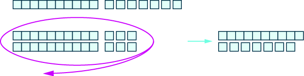
ચિત્રની ઉપર આધાર-દસના ખંડોની એક હરોળ છે અને તેની બાજુમાં સાત છૂટા ખંડ છે. નીચે આધાર-દસના ખંડોની બે હરોળ અને 3 છૂટા ખંડની બે હરોળને એક વર્તુળમાં દર્શાવ્યાં છે. તીર જમણે બતાવે છે, જ્યાં દસ ખંડની એક હરોળ અને તેની નીચે સાત છૂટા ખંડ છે.
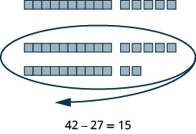
આ ચિત્રમાં આધાર-દસના ખંડોથી 42 - 27 = 15ની બાદબાકી દર્શાવેલી છે. શરૂઆતની સંખ્યામાં 4 દશક અને 2 એકમ છે; પછી તેને બાદ કરાતી સંખ્યા (27) અને પરિણામ (15)માં વહેંચેલાં છે.
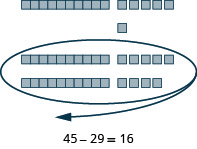
આધાર-દસના ખંડો વાપરીને 29ને 45માંથી બાદ કરતું ચિત્ર. શરૂઆતમાં 4 દશક અને 5 એકમ છે. તેમાંથી 2 દશક અને 9 એકમને વર્તુળમાં દર્શાવી દૂર કરતાં 1 દશક અને 6 એકમ બાકી રહે છે. તે 45 - 29 = 16 દર્શાવે છે.
પૂર્ણ સંખ્યાઓની બાદબાકી કરો
- ⓐ
- ⓑ
ઉકેલ
| ⓐ | |
| બાદ કરો 7, આ સંખ્યામાંથી: 9. | |
| સરવાળો કરીને તપાસો. |
| ⓑ | |
| બાદ કરો 3, આ સંખ્યામાંથી: 8. | |
| સરવાળો કરીને તપાસો. |
ઉકેલ
| એકમ અને દશકના અંકો એકની નીચે એક આવે તેમ સંખ્યાઓ લખો. | |
| દરેક સ્થાનકિંમતના અંકોની બાદબાકી કરો. એકમની બાદબાકી કરો: દશકની બાદબાકી કરો: |
|
| સરવાળો કરીને તપાસો. |
પૂર્ણ સંખ્યાઓનો તફાવત શોધો.
- સરખી સ્થાનકિંમતના અંકો એકની નીચે એક આવે તેમ સંખ્યાઓ લખો.
- દરેક સ્થાનકિંમતના અંકોની બાદબાકી કરો. એકમના સ્થાનથી શરૂ કરીને જમણેથી ડાબે જાઓ. ઉપરનો અંક નીચેના અંક કરતાં નાનો હોય, તો જરૂર પ્રમાણે ડાબેના સ્થાનમાંથી લો.
- જમણેથી ડાબે દરેક સ્થાનકિંમતની બાદબાકી કરતા જાઓ અને જરૂર પડે ત્યારે ડાબેના સ્થાનમાંથી લો.
- સરવાળો કરીને તપાસો.
ઉકેલ
| સરખી સ્થાનકિંમતના અંકો એકની નીચે એક આવે તેમ સંખ્યાઓ લખો. | 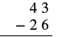 ઊભી ગોઠવણીમાં 43 ઓછા 26ની બાદબાકી હાથેથી ગણતરી કરવા માટે બતાવેલી છે. નીચેની આડી રેખા દર્શાવે છે કે જવાબ ક્યાં લખાશે. |
| એકમની બાદબાકી કરો. આપણે બાદ કરી શકતા નથી 6, જો એકમ માત્ર 3 હોય. તેથી 1 દશક લઈએ છીએ. હવે 3 દશક અને 13 એકમ થાય છે. દરેક સ્થાનની ઉપર આ સંખ્યાઓ લખીએ અને મૂળ અંકો છેકી નાખીએ. | 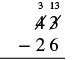 ઊભી ગોઠવણીમાં 43 ઓછા 26 માટે ફરી જૂથ બનાવીને ડાબેના સ્થાનેથી લેવાની રીત બતાવેલી છે. 4ને 3 અને 3ને 13 તરીકે દર્શાવી બાદબાકીની તૈયારી કરી છે. |
| હવે એકમની બાદબાકી કરી શકીએ છીએ. તફાવતમાં એકમના સ્થાને 7 લખીએ છીએ. | 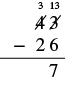 43માંથી 26 બાદ કરવાની ઊભી ગોઠવણીમાં 4 દશકને 3 દશક અને 3 એકમને 13 એકમ તરીકે ફરી ગોઠવ્યા છે. એકમમાં 13 − 6 = 7થી મળેલો 7 રેખાની નીચે એકમના સ્થાને છે; દશકની બાદબાકી બાકી છે. |
| હવે દશકની બાદબાકી કરીએ. તફાવતમાં દશકના સ્થાને 1 લખીએ છીએ. | 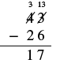 ડાબેના સ્થાનેથી લઈને બાદબાકી કરવાનું હાથેથી લખેલું ઉદાહરણ: 43 ઓછા 26 બરાબર 17. |
| સરવાળો કરીને તપાસો. 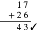 ઊભી ગોઠવણીમાં સરવાળો 17 વત્તા 26 બરાબર 43 દર્શાવેલો છે. જવાબ સાચો છે તે કાળા ખરાના ચિહ્નથી દર્શાવ્યું છે. અંકો એકની નીચે એક ગોઠવી મૂળભૂત અંકગણિતની ક્રિયા દર્શાવી છે. આપણો જવાબ સાચો છે. |
ઉકેલ
| સરખી સ્થાનકિંમતના અંકો એકની નીચે એક આવે તેમ સંખ્યાઓ લખો. | 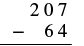 ઊભી ગોઠવણીમાં 207 ઓછા 64ની બાદબાકી છે. જવાબ નીચે લખવા માટે રેખા આપેલી છે. |
| એકમની બાદબાકી કરો. તફાવતમાં એકમના સ્થાને 3 લખો. |
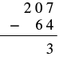 207માંથી 64 બાદ કરવાની ઊભી ગોઠવણી. એકમમાં 7 − 4 = 3 કર્યા પછી રેખાની નીચે એકમના સ્થાને 3 લખેલો છે. આ ચિત્રમાં હજી ડાબેના સ્થાનેથી લેવાના ફેરફાર દર્શાવ્યા નથી. |
| દશકની બાદબાકી કરો. આપણે બાદ કરી શકતા નથી 6, જો દશક 0 હોય. તેથી 1 સો લઈએ છીએ અને 10 દશકને આપણી પાસેના 0 દશકમાં ઉમેરીએ છીએ. હવે કુલ 10 દશક થાય છે. દશકના સ્થાનની ઉપર 10 લખીએ અને 0 છેકી નાખીએ. પછી સોના સ્થાનનો 2 છેકીને તેની ઉપર 1 લખીએ. | 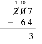 ઊભી ગોઠવણીમાં 207 - 64ની બાદબાકીમાં શરૂઆતમાં સોના સ્થાનેથી દશકના સ્થાને લેવાનું અને એકમનો અંક 3 મેળવવાનું દર્શાવ્યું છે. |
| હવે દશકની બાદબાકી કરીએ. તફાવતમાં દશકના સ્થાને 4 લખીએ છીએ. | 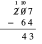 207માંથી 64 બાદ કરવાની ઊભી ગોઠવણીમાં 2 સોમાંથી 1 સો લઈને 10 દશક બનાવ્યા છે. ઉપર 1 સો, 10 દશક અને 7 એકમ દર્શાવ્યાં છે. રેખાની નીચે દશક અને એકમના સ્થાને આંશિક પરિણામ 43 છે; સોની બાદબાકી હજી બાકી છે. |
| અંતે સોની બાદબાકી કરો. નીચેની સંખ્યામાં સોના સ્થાને કોઈ અંક નથી, તેથી તે સ્થાને 0 હોવાનું ધારી શકીએ છીએ. કારણ કે તેથી તફાવતમાં સોના સ્થાને 1 લખીએ છીએ. | 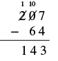 ઊભી ગોઠવણીમાં 207 ઓછા 64ની બાદબાકી છે. ડાબેના સ્થાનેથી લેવાનાં પગલાં સાથે જવાબ 143 દર્શાવેલો છે. |
| સરવાળો કરીને તપાસો.
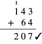 ઊભી ગોઠવણીમાં 143 + 64નો સરવાળો છે. એક 1 મૂકેલો છે પહેલા અંક 1ની ઉપર, જે સંખ્યા 143નો ભાગ છે. પરિણામ 207 છે. આપણો જવાબ સાચો છે. |
ઉકેલ
| સરખી સ્થાનકિંમતના અંકો એકની નીચે એક આવે તેમ સંખ્યાઓ લખો. | 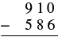 ઊભી ગોઠવણીમાં બાદબાકી આપેલી છે: ઉપર 910 અને નીચે 586 છે. તેમની નીચે આડી રેખા છે અને 586ની ડાબે ઓછાનું ચિહ્ન ક્રિયા દર્શાવે છે. |
| એકમની બાદબાકી કરો. આપણે બાદ કરી શકતા નથી 6, જો એકમ 0 હોય. તેથી 1 દશક લઈને 10 એકમને આપણી પાસેના 0 એકમમાં ઉમેરીએ છીએ. હવે 10 એકમ થાય છે. દશકના સ્થાનની ઉપર 0 લખીને 1 છેકીએ. એકમના સ્થાનની ઉપર 10 લખીને 0 છેકીએ. હવે એકમની બાદબાકી કરી શકીએ છીએ. | 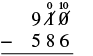 ઊભી ગોઠવણીમાં 910 ઓછા 586ની બાદબાકી છે. એકમના સ્તંભ માટે ડાબેના સ્થાનેથી લેવાનું પહેલું પગલું બતાવ્યું છે: દશકના સ્થાનનો “1” બદલાઈને “0” અને એકમનો “0” બદલાઈને “10” થાય છે. |
| તફાવતમાં એકમના સ્થાને 4 લખો. | 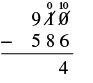 910માંથી 586 બાદ કરવાની ઊભી ગોઠવણીમાં 1 દશક લઈને 0 એકમને 10 એકમ કર્યા છે. દશકનો 1 છેકીને 0 અને એકમનો 0 છેકીને 10 લખ્યું છે. એકમમાં 10 − 6 = 4થી મળેલો 4 રેખાની નીચે છે; બીજા સ્થાનની બાદબાકી બાકી છે. |
| દશકની બાદબાકી કરો. આપણે બાદ કરી શકતા નથી 8, જો દશક 0 હોય. તેથી 1 સો લઈને 10 દશકને આપણી પાસેના 0 દશકમાં ઉમેરીએ છીએ; હવે 10 દશક થાય છે. સોના સ્થાનની ઉપર 8 લખીને 9 છેકો. દશકના સ્થાનની ઉપર 10 લખો. | 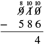 910માંથી 586 બાદ કરવાની ઊભી ગોઠવણીમાં એકમ માટે 1 દશક લીધા પછી દશક શૂન્ય હતા. હવે સોના સ્થાનેથી 1 સો લઈને 10 દશક બનાવ્યા છે. ઉપર 8 સો, 10 દશક અને 10 એકમ છે. રેખાની નીચે એકમના સ્થાને 4 છે. |
| હવે દશકની બાદબાકી કરી શકીએ છીએ. . | 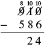 910માંથી 586 બાદ કરતી વખતે એકમમાં 10 − 6 = 4 અને દશકમાં 10 − 8 = 2 મળે છે. રેખાની નીચે આંશિક પરિણામ 24 લખેલું છે. સોની બાદબાકીનું આગળનું પગલું હજી બાકી છે; પૂર્ણ જવાબ 324 થાય છે. |
| સોના સ્થાનની બાદબાકી કરો. તફાવતમાં સોના સ્થાને 3 લખો. | 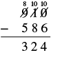 ઊભી ગોઠવણીમાં 910 - 586 = 324ની બાદબાકી; તેને ઉકેલવા માટે ફરી જૂથ બનાવવાની રીત દર્શાવી છે. |
| સરવાળો કરીને તપાસો. 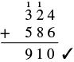 ઊભી ગોઠવણીમાં 324 વત્તા 586 બરાબર 910નો સરવાળો છે. આગળના સ્થાને લઈ જવાતા અંકો સંખ્યાઓની ઉપર દર્શાવ્યા છે અને ખરાનું ચિહ્ન સરવાળો સાચો હોવાનું બતાવે છે. આપણો જવાબ સાચો છે. |
ઉકેલ
| સરખી સ્થાનકિંમતના અંકો એકની નીચે એક આવે તેમ સંખ્યાઓ લખો. | 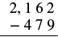 ઊભી ગોઠવણીમાં 2162 ઓછા 479ની બાદબાકી. |
| એકમની બાદબાકી કરો. બાદ કરી શકતા નથી 9, જો એકમ માત્ર 2 હોય. તેથી 1 દશક લઈને 10 એકમને 2 એકમમાં ઉમેરો, જેથી 12 એકમ થાય. દશકના સ્થાનની ઉપર 5 લખીને 6 છેકો. એકમના સ્થાનની ઉપર 12 લખીને 2 છેકો. | 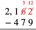 ઊભી ગોઠવણીમાં 2162 ઓછા 479ની બાદબાકી અને ડાબેના સ્થાનેથી લેવાની પ્રક્રિયા. એકમના સ્થાનનો “2” બદલાઈને “12” થાય છે; તે માટે દશકના સ્થાનના “6”માંથી લેવાતાં ત્યાં “5” થાય છે. |
| હવે એકમની બાદબાકી કરી શકીએ છીએ. | |
| તફાવતમાં એકમના સ્થાને 3 લખો. | 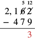 ઊભી ગોઠવણીમાં 2162માંથી 479 બાદ થાય છે. ડાબેના સ્થાનેથી લેવાનું પહેલું પગલું બતાવ્યું છે: એકમના સ્થાનનો “2” બદલાઈને “12” અને દશકના સ્થાનનો “6” બદલાઈને “5” થાય છે. એકમના સ્તંભમાં “3” મળે છે. |
| દશકની બાદબાકી કરો. બાદ કરી શકતા નથી 7, જો દશક માત્ર 5 હોય. તેથી 1 સો લઈને 10 દશકને 5 દશકમાં ઉમેરો, જેથી 15 દશક થાય. સોના સ્થાનની ઉપર 0 લખીને 1 છેકો. દશકના સ્થાનની ઉપર 15 લખો. | 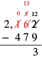 ઊભી ગોઠવણીમાં 2162માંથી 479 બાદ થાય છે. ડાબેના સ્થાનેથી લેવાનાં પગલાં બતાવ્યાં છે: એકમનો “2” બદલાઈને “12” અને દશકનો “6” બદલાઈને “5” થાય છે. પછી તેને છેકીને “15” કરાય છે અને સોના સ્થાનનો “1” બદલાઈને “0” થાય છે. જવાબના એકમના સ્થાને “3” લખાય છે. |
| હવે દશકની બાદબાકી કરી શકીએ છીએ. | |
| તફાવતમાં દશકના સ્થાને 8 લખો. | 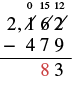 ઊભી ગોઠવણીમાં 2162માંથી 479 બાદ થાય છે. ડાબેના સ્થાનેથી લેવાનાં પગલાં બતાવ્યાં છે: એકમનો “2” બદલાઈને “12”, દશકનો “6” બદલાઈને “15” અને સોનો “1” બદલાઈને “0” થાય છે. જવાબના એકમના સ્થાને “3” અને દશકના સ્થાને “8” લખાય છે. |
| હવે સોની બાદબાકી કરી શકીએ છીએ. | 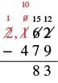 2,162માંથી 479 બાદ કરવાની ઊભી ગોઠવણીમાં દશક અને એકમનું આંશિક પરિણામ 83 છે. સોના સ્થાને શૂન્ય હોવાથી 2 હજારમાંથી 1 હજાર લઈને 10 સો બનાવ્યા છે. ઉપરનાં ફરી ગોઠવેલાં મૂલ્યો 1 હજાર, 10 સો, 15 દશક અને 12 એકમ છે. |
| તફાવતમાં સોના સ્થાને 6 લખો. | 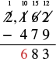 2,162માંથી 479 બાદ કરતી વખતે સોમાં 10 − 4 = 6 કર્યા પછી રેખાની નીચે આંશિક પરિણામ 683 છે. તેનો સોના સ્થાનનો અંક 6 લાલ રંગમાં છે. હજારના સ્થાનની બાદબાકી હજી બાકી છે. |
| હજારની બાદબાકી કરો. નીચેની સંખ્યામાં હજારના સ્થાને કોઈ અંક નથી, તેથી ત્યાં 0 હોવાનું ધારીએ છીએ. તફાવતમાં હજારના સ્થાને 1 લખો. | 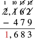 ઊભી ગોઠવણીમાં 2162 ઓછા 479ની બાદબાકીમાં ડાબેના સ્થાનેથી લેવાનું દર્શાવ્યું છે; પરિણામ 1683 છે. અંતિમ જવાબ 1683નો એક ભાગ (“1”) લાલ રંગમાં છે. |
| સરવાળો કરીને તપાસો. |
શબ્દોમાં આપેલી વાતને ગણિતની લખાવટમાં ફેરવો
| ક્રિયા | શબ્દસમૂહ | ઉદાહરણ | પદાવલી |
|---|---|---|---|
| બાદબાકી | ઓછા | ઓછા | |
| તફાવત | આ સંખ્યાઓનો તફાવત: અને | ||
| માં ઘટાડો કરો: | માં ઘટાડો કરો: | ||
| જેટલો ઘટાડો આ સંખ્યામાં: | જેટલો ઘટાડો આ સંખ્યામાં: | ||
| બાદ કરો આ સંખ્યામાંથી: | બાદ કરો આ સંખ્યામાંથી: |
- ⓐ આ સંખ્યાઓનો તફાવત: અને
- ⓑ બાદ કરો: આ સંખ્યામાંથી:
ઉકેલ
- ⓐ આ તફાવત શબ્દ બંને સંખ્યાની બાદબાકી કરવાનું કહે છે. સંખ્યાઓનો ક્રમ શબ્દસમૂહમાં આપેલા ક્રમ જેવો જ રહે છે.
13 અને 8નો તફાવત ગણિતની લખાવટમાં ફેરવો. સરળ કરો. 5 - ⓑ આ શબ્દો બાદ કરો આ સંખ્યામાંથી કહે છે કે પહેલી સંખ્યાને બીજી સંખ્યામાંથી દૂર કરવાની છે. ક્રમ સાચો રાખવા કાળજી લેવી જરૂરી છે.
બાદ કરો 24, આ સંખ્યામાંથી: 43 ગણિતની લખાવટમાં ફેરવો. સરળ કરો. 19
- ⓐ આ સંખ્યાઓનો તફાવત: અને
- ⓑ બાદ કરો: આ સંખ્યામાંથી:
- ⓐ 14 − 9 = 5
- ⓑ 37 − 21 = 16
- ⓐ માં ઘટાડો કરો:
- ⓑ જેટલો ઘટાડો આ સંખ્યામાં:
- ⓐ 11 − 6 = 5
- ⓑ 67 − 18 = 49
વ્યવહારુ પ્રશ્નોમાં પૂર્ણ સંખ્યાઓની બાદબાકી કરો
ઉકેલ
| શબ્દોમાં લખો. | 73 અને 27નો તફાવત |
| ગણિતની લખાવટમાં ફેરવો. તફાવત શબ્દ બાદબાકી કરવાનું કહે છે. | |
| પછી બાદબાકી કરીએ. | 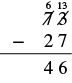 ઊભી ગોઠવણીમાં 73માંથી 27 બાદ કરતાં 46 મળે છે. દશકના સ્થાનેથી લેવાનું સ્પષ્ટ દર્શાવ્યું છે: 7 બદલાઈને 6 અને 3 બદલાઈને 13 થાય છે. |
| પ્રશ્નનો જવાબ આપવા વાક્ય લખો. | તાપમાનનો તફાવત 46 ડિગ્રી ફેરનહાઇટ હતો. |
ઉકેલ
| શબ્દોમાં લખો. | 588 અને 399 વચ્ચેનો તફાવત |
| ગણિતની લખાવટમાં ફેરવો. | |
| બાદબાકી કરો. | 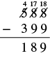 ત્રણ સ્તંભમાં 588 ઓછા 399ની બાદબાકી ગોઠવેલી છે. ડાબેના સ્થાનેથી લેવાનું દર્શાવ્યું છે અને જવાબ 189 છે. |
| પ્રશ્નનો જવાબ આપવા વાક્ય લખો. | સામાન્ય કિંમત અને સેલની કિંમત વચ્ચેનો તફાવત $189 છે. |
મુખ્ય સંકલ્પનાઓ
| ક્રિયા | લખાવટ | પદાવલી | આ રીતે વાંચો | પરિણામ |
|---|---|---|---|---|
| બાદબાકી | સાત ઓછા ત્રણ | આ સંખ્યાઓનો તફાવત: અને |
- પૂર્ણ સંખ્યાઓની બાદબાકી કરો.
- સરખી સ્થાનકિંમતના અંકો એકની નીચે એક આવે તેમ સંખ્યાઓ લખો.
- દરેક સ્થાનકિંમતના અંકોની બાદબાકી કરો. એકમના સ્થાનથી શરૂ કરીને જમણેથી ડાબે જાઓ. ઉપરનો અંક નીચેના અંક કરતાં નાનો હોય, તો જરૂર પ્રમાણે ડાબેના સ્થાનમાંથી લો.
- જમણેથી ડાબે દરેક સ્થાનકિંમતની બાદબાકી કરતા જાઓ અને જરૂર પડે ત્યારે ડાબેના સ્થાનમાંથી લો.
- સરવાળો કરીને તપાસો.
અભ્યાસથી નિપુણતા
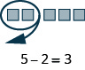
ચિત્રમાં ખંડોથી 5 - 2ની બાદબાકી દર્શાવી છે.
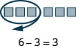
ચિત્રમાં ખંડોથી 6- 3ની બાદબાકી દર્શાવી છે.
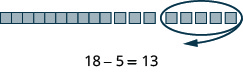
ચિત્રમાં ખંડોથી 18 - 5ની બાદબાકી દર્શાવી છે.
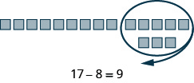
ચિત્રમાં ખંડોથી 17 - 8ની બાદબાકી દર્શાવી છે.
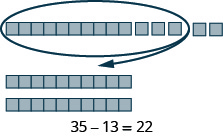
ચિત્રમાં ખંડોથી 35 - 13ની બાદબાકી દર્શાવી છે.
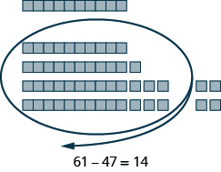
ચિત્રમાં ખંડોથી 61 - 47ની બાદબાકી દર્શાવી છે.
રોજિંદા જીવનમાં ગણિત
લેખન અભ્યાસ
સ્વમૂલ્યાંકન
| હું આ કરી શકું છું… | વિશ્વાસપૂર્વક | થોડી મદદથી | ના—મને સમજાતું નથી! |
|---|---|---|---|
| બાદબાકીની લખાવટનો ઉપયોગ. | |||
| પૂર્ણ સંખ્યાઓની બાદબાકી નમૂના દ્વારા દર્શાવવી. | |||
| પૂર્ણ સંખ્યાઓની બાદબાકી. | |||
| શબ્દોમાં આપેલી વાતને ગણિતની લખાવટમાં ફેરવવી. | |||
| વ્યવહારુ પ્રશ્નોમાં પૂર્ણ સંખ્યાઓની બાદબાકી. |
બાદબાકીનાં કૌશલ્યોનું સ્વમૂલ્યાંકન કોષ્ટક, જેમાં પાંચ શીખવાનાં લક્ષ્યો માટે વિદ્યાર્થીઓ પોતાની નિપુણતાને “વિશ્વાસપૂર્વક”, “થોડી મદદથી” અથવા “ના—મને સમજાતું નથી!” તરીકે આંકી શકે છે.